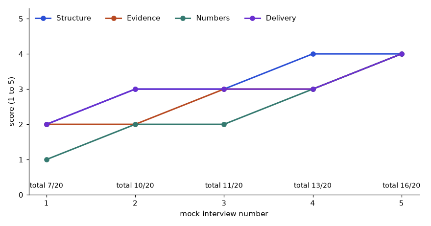

In this chapter
- 7.1 What Each Role Tests
- 7.2 SQL, Python/DSA and Stats/ML Preparation
- 7.3 Case, Product and System-Design Rounds; Behavioral Stories
- 7.4 The 12-Week Plan, Mocks and Resume Alignment
- 7.5 Scoring Your Answers: A Mock-Interview Rubric
- 7.6 The STAR Answer Bank: Four Scored Stories
- Chapter recap
- Practice set
- Prompt pack
Many capable engineers fail interviews because they never practised the interview format: 45 minutes, a stranger, a time limit, someone watching. This chapter shows what each role is tested on, how to prepare each round (SQL, Python and DSA, statistics and machine learning, system design, case and product questions, behavioral), how to build eight reusable STAR stories from your own work experience, and a 12-week plan with 96 hours of practice. By the end you will know what to practise first, how to measure readiness, and how to run a mock interview.
7.1 What Each Role Tests
Words you need
| Term | Meaning |
|---|---|
| Online assessment (OA) | A timed test on a website, often SQL, Python or multiple choice |
| Screen | A short first call (recruiter or engineer) to check basic fit |
| Loop | The full set of interview rounds for one job |
| DSA | Data structures and algorithms (lists, dictionaries, trees, sorting, graphs) |
| Case round | A business problem you reason through aloud |
| Behavioral round | Questions about your past actions (use STAR from Chapter 3) |
The round map (weight by role)
| Round | Analyst | Data Eng | Data Scientist | ML/AI Eng |
|---|---|---|---|---|
| SQL | Heavy | Heavy | Medium-Heavy | Medium |
| Python/coding | Light | Medium-Heavy | Medium | Heavy (+DSA) |
| Statistics/probability | Medium | Light | Heavy | Medium |
| ML | none | none | Heavy | Heavy |
| System design | none | Heavy (data systems) | Medium (ML design) | Heavy (ML systems) |
| Case/product | Heavy | Light | Heavy | Medium |
| Behavioral | Always | Always | Always | Always |
A typical loop

Read the picture left to right. Each box is a stage. The week labels above the boxes are typical, not promised. Many companies are faster; some take longer. The last stage is the offer, and your notice period starts after you accept.
Running example: you target Data Engineer roles
Your weights: SQL (heavy), Python (medium-heavy), system design (heavy), behavioral (always), stats (light).
Problem 7.1.1 You have 96 hours of preparation. Allocate hours for the Data Engineer target using weights Heavy = 3, Medium-Heavy = 2, Light = 1, Always = 2 for behavioral.
| Formula | hours for a round = total hours x (round weight / sum of weights) |
|---|---|
| Plug in | Weights: SQL 3, Python 2, system design 3, behavioral 2, stats 1. Sum = 11. |
| Compute | SQL = 96 x 3/11 = 26.2; Python = 96 x 2/11 = 17.5; system design = 26.2; behavioral = 17.5; stats = 96 x 1/11 = 8.7. Total = 96.1 (rounding). |
| Answer | About 26 hours SQL, 18 Python, 26 system design, 18 behavioral, 9 stats. |
| Check | 26.2 + 17.5 + 26.2 + 17.5 + 8.7 = 96.1, within rounding of 96. |
| Why it matters | In plain words: you spend your hours where the marks are, not where your hobby is. |
Problem 7.1.2 Same total for a Data Scientist target: SQL 2, Python 2, stats 3, ML 3, ML design 2, case 3, behavioral 2.
| Step 1 | Sum of weights = 2 + 2 + 3 + 3 + 2 + 3 + 2 = 17. |
|---|---|
| Step 2 | Hours: SQL 96 x 2/17 = 11.3; Python 11.3; stats 96 x 3/17 = 16.9; ML 16.9; ML design 11.3; case 16.9; behavioral 11.3. |
| Answer | Stats, ML and case each get about 17 hours; the others about 11. |
| Check | 11.3 x 4 + 16.9 x 3 = 45.2 + 50.7 = 95.9. Rounds to 96. |
Connection to the real job
Read the JD (Chapter 1) and ask the recruiter: "What are the interview rounds and what does each cover?" Most recruiters tell you. Then you prepare for the actual loop.
Applications
- Every role target: use the map to set study hours.
- Choosing between two applications: prepare for the one with the nearest loop first.
Check yourself
- What is an OA? Answer: a timed online assessment.
- Which role has heavy statistics? Answer: Data Scientist.
- What always appears in every role? Answer: the behavioral round.
7.2 SQL, Python/DSA and Stats/ML Preparation
SQL and Python practice
- Use LeetCode (SQL and Python), plus other sites, in a pattern-based way, not random order. For SQL: joins, GROUP BY / HAVING, window functions (ROW_NUMBER, RANK, DENSE_RANK, LAG), self-joins, dates, NULL handling. For Python/DSA: arrays and hashing, two pointers, sliding window, stacks, binary search, trees, graphs, simple dynamic programming.
- 2 to 3 problems a week during general study; 5 to 7 per week in the last 6 weeks. For each problem: try 25 minutes alone, then study a solution, then redo it from memory 3 days later.
- Track in a spreadsheet: problem, pattern, date, solved alone (yes/no), mistake.
A real SQL trap: the "second highest" with ties
Table emp(id, name, dept, salary). Question: for each department, find the employee with the second-highest salary. Before you run it, what do you think LIMIT 1 OFFSET 1 returns for the Data department, where two people share the top salary of 120?
create table emp(id int, name text, dept text, salary int);
insert into emp values (1,'Asha','Data',90),(2,'Ben','Data',120),(3,'Chitra','Data',120),
(4,'Dev','Ops',70),(5,'Esha','Ops',80),(6,'Farid','Ops',95);
-- Correct: DENSE_RANK handles ties
select dept, name, salary from (
select dept, name, salary,
dense_rank() over (partition by dept order by salary desc) r
from emp) where r = 2 order by dept;
-- Wrong: OFFSET ignores ties
select name, salary from emp where dept='Data' order by salary desc limit 1 offset 1;Real output (SQLite):
dept name salary
---- ---- ------
Data Asha 90
Ops Esha 80
name salary
------ ------
Chitra 120 Explanation line by line. partition by dept restarts ranking inside each department. order by salary desc ranks highest first. dense_rank() gives tied rows the same rank and does not skip numbers, so both 120 salaries are rank 1 and 90 is rank 2. LIMIT 1 OFFSET 1 just skips the first row, so it returns the second row, Chitra with 120, which is still the highest salary. That is wrong when ties exist.
Problem 7.2.1 What would rank() instead of dense_rank() return for Data, and why?
| Step 1 | rank() gives ties the same rank, then skips. Salaries 120, 120, 90 get ranks 1, 1, 3. |
|---|---|
| Step 2 | r = 2 matches no row in Data. |
| Answer | rank() returns no row for Data; dense_rank() returns Asha. Ask the interviewer: "do you want the second highest value or the second row?" That is the clarify step. |
| Check | Ops salaries 95, 80, 70 are distinct, so both functions return Esha. Only ties show the difference. |
| Why it matters | In plain words: ties are the favourite hidden trap in SQL interviews. |
Statistics and ML Q&A bank
Write your own answers to 100 common questions (do not copy). Group them:
| Group | Sample questions | Count |
|---|---|---|
| Probability | Bayes rule, conditional probability, expected value | 15 |
| Statistics | p-value, confidence interval, Type I and II errors, A/B test design, power | 20 |
| ML basics | bias-variance, overfitting, regularization, cross-validation | 20 |
| Models | linear/logistic regression, trees, random forest, boosting | 15 |
| Metrics | precision, recall, F1, ROC-AUC, class imbalance | 15 |
| Practice | data leakage, feature engineering, monitoring, drift | 15 |
Answer each in PREP form (Chapter 3), 60 seconds. Record yourself. 100 questions at 15 minutes each (write, then speak) is 25 hours.
Problem 7.2.2 Explain precision and recall with numbers: a fraud model flags 100 transactions; 40 are really fraud; the data has 50 frauds in total.
| Formula | precision = true positives / flagged; recall = true positives / actual frauds |
|---|---|
| Plug in | Precision = 40 / 100; recall = 40 / 50 |
| Compute | Precision = 0.40; recall = 0.80 |
| Answer | Of the flagged transactions, 40% are real fraud (precision). The model catches 80% of all fraud (recall). F1 = 2 x 0.4 x 0.8 / (0.4 + 0.8) = 0.64 / 1.2 = 0.533. |
| Check | 40 / 100 = 0.4, 40 / 50 = 0.8. Misses = 50 - 40 = 10 frauds, false alarms = 100 - 40 = 60. |
| Why it matters | In plain words: the model finds most fraud but 6 of 10 alerts are false alarms; the business decides whether that cost is acceptable. Always connect the metric to a cost. |
Picture
Weekly plan: Mon SQL x1 | Tue Python x1 | Wed stats Q&A (5) | Thu SQL x1 | Fri review |
Sat project / mock (3 h) | Sun restConnection to the real job
SQL and Python are daily tools; statistics Q&A is a day-to-day skill for experiment review. Practising explanations makes you a better team member, not only a better candidate.
Applications
- Data Analyst: SQL window functions, A/B test questions.
- Data Engineer: SQL, Python scripting, DSA basics.
- ML Engineer: DSA, ML concepts, metrics.
Check yourself
- What does DENSE_RANK do with ties? Answer: gives tied rows the same rank without skipping numbers.
- What is precision? Answer: true positives divided by everything flagged.
- How long do you try before looking at a solution? Answer: about 25 minutes.
7.3 Case, Product and System-Design Rounds; Behavioral Stories
The case framework
- Clarify the goal and the metric ("What does 'drop' mean? Which period?").
- Structure with an issue tree (Chapter 6).
- Prioritize branches by size and likelihood; ask for data.
- Calculate with the numbers they give.
- Recommend with a next step and a risk.
Problem 7.3.1 Case: "Daily active users (DAU) fell from 200,000 to 170,000. What do you do?" The interviewer gives: Android 100,000 to 99,000; iOS 60,000 to 59,000; web 40,000 to 12,000.
| Formula | change % = (new - old) / old x 100 |
|---|---|
| Compute | Total: (170,000 - 200,000) / 200,000 = -15%. Android: -1.0%. iOS: -1.7%. Web: (12,000 - 40,000) / 40,000 = -70%. |
| Step | Share of the loss: total loss 30,000; web lost 28,000, which is 28,000 / 30,000 = 93.3%. |
| Answer | The drop is a web problem: 93% of the lost users are on web, and web fell 70%. First check data and tracking on web (a broken tag or login bug), then recent web releases, then SEO or ad traffic changes. Recommendation: investigate web today, and confirm the tracking before any marketing spend. |
| Check | 1,000 + 1,000 + 28,000 = 30,000. Matches the total loss. |
| Why it matters | In plain words: one platform explains almost everything, so you ignore the others for now. |
System design rounds
For Data Engineers and ML/AI Engineers, system design is a heavy round. Chapters 8 and 9 give the framework and worked designs. For Data Scientists, an ML design round asks you to design a model system (metric, data, features, model, evaluation, monitoring). You will use the same frameworks.
Eight STAR story templates from your work experience
Prepare eight stories. Write each in about 260 words (2 minutes) in your own true words. Fill the brackets with your real events and numbers; do not invent.
| # | Theme | Template prompt (fill with a true event) |
|---|---|---|
| 1 | Conflict | A colleague disagreed that [slow report turnaround] was a problem. Action: showed the 95th-percentile data, agreed on a threshold. Result: [fix, number] |
| 2 | Failure | A check missed [a defect or a wrong assumption]. Action: told the team early, fixed the plan, added a checklist. Result: [what changed] |
| 3 | Leadership | Led [a release cycle or a project] with [N people]. Action: split work, daily check-in. Result: [on time] |
| 4 | Ambiguity | Requirement was "make it quicker". Action: asked for a service target, defined a 95th-percentile goal. Result: [clear target met] |
| 5 | Deadline | Release moved up by [N days]. Action: prioritized critical flows. Result: [shipped, risk accepted] |
| 6 | Mistake | You ran a month-end report on the wrong data file. Action: owned it, fixed it, added a pre-run check. Result: [no repeat] |
| 7 | Influence | Convinced a manager to [invest in an index or capacity] using data. Result: [number] |
| 8 | Learning fast | Learned [a new tool or SQL] in [N days] to deliver [project]. Result: [outcome] |
Problem 7.3.2 Draft story 6 (mistake) in STAR in about 6 sentences, with placeholders where facts must be yours.
| Step 1 | Situation: "I produced a month-end sales report last quarter, but the results looked too good." |
|---|---|
| Step 2 | Task: "I needed to confirm the results before reporting." |
| Step 3 | Action: "I found I had used a file from a smaller test branch of the shop, not the full company. I told my lead the same day, re-ran the report on the correct file, and added a file check to our reporting checklist." |
| Step 4 | Result: "The correct report showed [your number] instead of [wrong number]. The checklist stopped this error from repeating over the next [N] reports." |
| Answer | A STAR story that owns the mistake, shows speed in reporting, and ends with prevention. Use only what truly happened. |
| Check | Count words aloud: aim for 200 to 260. The Action part should take about 60% of the time. |
| Why it matters | Interviewers use the mistake question to see honesty and learning. Owning it clearly is a strength. |
The picture
Case: Clarify -> Structure (tree) -> Prioritize -> Calculate -> Recommend
Behavioral: 8 stories, each tagged with 2-3 themes (one story can answer many questions)Connection to the real job
Cases are real business conversations. Behavioral stories are how managers decide if you are safe to work with.
Applications
- Analyst loops: heavy on cases and SQL.
- Data Scientist loops: product sense, experiments.
- Engineer loops: design plus behavioral.
Check yourself
- Steps of the case framework? Answer: clarify, structure, prioritize, calculate, recommend.
- How many STAR stories to prepare? Answer: eight.
- What do you say in a mistake story? Answer: own it, fix it, prevent it.
7.4 The 12-Week Plan, Mocks and Resume Alignment
The 12-week plan (96 hours)

Each week: five 1-hour weekday sessions plus one 3-hour weekend block, 8 hours total. Twelve weeks give 96 hours.
| Weeks | Focus | Output |
|---|---|---|
| 1-2 | SQL patterns, DSA basics (arrays, hashing) | 10 SQL and 6 DSA problems logged |
| 3-4 | Python patterns, two pointers, sliding window | 12 problems, 1 mini project cleanup |
| 5-6 | Statistics and ML Q&A (50 questions) | 50 written and recorded answers |
| 7-8 | System design frameworks (Chapters 8, 9) | 4 designs explained aloud |
| 9-10 | Case practice, 8 STAR stories | stories written and timed |
| 11-12 | Mock interviews (4 or more), apply in batches | mock log, 20 applications |
Mock interviews
- Use peers, Pramp and interviewing.io (check what is free now), or a friend with a list of questions.
- Record yourself (with permission) and review: structure, filler words, pace, clarity.
- Start monthly from month 6 of your plan; weekly in the last 4 weeks.
- After each mock write 3 lines: what went well, one fix, one topic to study.
Problem 7.4.1 You do 4 mocks in weeks 11 to 12 and fail 3 of them for the same reason: you code before clarifying. What is the plan?
| Step 1 | Diagnose: one repeated error, so one deliberate practice target. |
|---|---|
| Step 2 | Rule: before coding, speak 4 sentences (clarify, restate, example, brute force). Put them on a sticky note. |
| Step 3 | Practise on 10 problems with a timer: 4 minutes of thinking aloud first. |
| Answer | After 10 practice problems, run 2 more mocks and count how many times you started coding before step 4. Target: zero. |
| Check | If you fixed it, the next mocks show your first 4 minutes are speaking. A measurable behaviour is better than "improve". |
| Why it matters | In plain words: fix the one thing that repeats; ignore the ten you imagine. |
Problem 7.4.2 You send 60 applications and get 15 recruiter screens. What is your screen rate, and how many offers do you expect if 40% pass the technical round, 33% pass the final round and 50% of finalists receive an offer?
| Formula | rate = next stage / previous stage |
|---|---|
| Compute | Screen rate = 15 / 60 = 25%. Technical: 15 x 0.40 = 6. Final: 6 x 0.33 = 2. Offers: 2 x 0.50 = 1. |
| Answer | About 1 offer from 60 applications, using these planning numbers. They are illustrative; track your own. |
| Check | 0.25 x 0.40 x 0.33 x 0.50 = 0.0165; 60 x 0.0165 = 0.99, about 1. Matches. |
| Why it matters | In plain words: job search is a numbers game, but referrals and good targeting change the rates (Chapter 12). |
Resume alignment
Chapter 11 covers the resume. For interviews, make sure each bullet is something you can talk about for 3 minutes. If you cannot explain a technology, remove it.
Connection to the real job
The plan builds habits that also help at work: regular practice, feedback, and review.
Applications
- Interview season: weekly plan.
- Between seasons: keep one problem a week to stay sharp.
Check yourself
- How many hours is the 12-week plan? Answer: 96.
- What do you write after each mock? Answer: what went well, one fix, one topic.
- When should mocks start? Answer: early, not after feeling ready.
7.5 Scoring Your Answers: A Mock-Interview Rubric
The four-part rubric
| Part | 1 (weak) | 3 (acceptable) | 5 (strong) |
|---|---|---|---|
| Structure | Wanders, no order | Situation and result present, task or action vague | Clear STAR or PREP, ends with the result |
| Evidence | "We" and general claims | One concrete action by you | Two or three specific actions, your decisions, one trade-off |
| Numbers | None | One number | Before and after, with a unit and a time frame |
| Delivery | Over 3 minutes or under 30 seconds, many fillers | About 2 minutes, a few fillers | 90 to 120 seconds, calm, eye contact, clear last sentence |
Total is out of 20. A practice bar of 14 or more, repeated in two mocks in a row, means the answer is ready to use. This bar is a suggested rule of thumb, not an industry standard.
Problem 7.5.1 Question: "Tell me about a time you found a data problem." Score this answer: "We had a data issue in the pipeline and I fixed it. It took some time and the team was happy."
| Structure | 2: there is a problem and an outcome, but no task and no order of steps. |
|---|---|
| Evidence | 2: "I fixed it" says nothing about what you did. |
| Numbers | 1: no number at all. |
| Delivery | 2: 15 seconds long, vague words ("some time"). |
| Total | 2 + 2 + 1 + 2 = 7 out of 20. |
| Next fix | The lowest part is Numbers. Add before and after figures first. |
Problem 7.5.2 Rewrite it as a strong STAR answer and score it.
| Situation | "Our nightly orders load took 3 hours 40 minutes and missed the 6 am sales report on 4 days out of 10." |
|---|---|
| Task | "I owned the load job and had to make it finish before 6 am every day." |
| Action | "I timed each step and found one query scanning the full orders table. I added a date filter on the partition column and an index on the join key, then added a row-count check so a silent failure would alert us." |
| Result | "Run time dropped from 220 minutes to 55 minutes, a 75% cut, and in the next 60 days we missed the report zero times." |
| Check the math | 3 hours 40 minutes = 220 minutes. (220 - 55) / 220 = 165 / 220 = 0.75. |
| Score | Structure 4, Evidence 4, Numbers 4, Delivery 4 = 16 out of 20. The answer is about 115 words, which is roughly 55 seconds at 130 words per minute. That is why Delivery is 4, not 5: add a one-sentence lesson at the end to reach about 90 seconds. |

How to read it: every line rises, but Numbers started lowest (1) and gained the most (to 4), because the learner fixed the lowest part each week. The learner crossed the practice bar of 14 only at mock 5 (16). Mock 4 (13) was one point short, so a fifth mock was needed. Use the same chart for your own mocks: one row per mock, one fix per week.
Going deeper
- Score a recording, not memory. Record each mock and score it the next day with the rubric table open. Memory flatters you.
- Get a second scorer. A friend or an AI prompt (see the Prompt pack) using the same rubric. If the two scores differ by more than 3 points, your rubric reading is unclear, so discuss one answer line by line.
- Take-home tests. Treat a take-home like a mini portfolio project. Read the brief twice, write assumptions at the top of the README, timebox (if they say 3 hours, stop near 3 and list what you would do next), include one test or data check, and show one clear chart or table of the result. A tidy 3-hour submission beats a messy 12-hour one.
Check yourself
- Scores were Structure 3, Evidence 3, Numbers 2, Delivery 4. Total and next fix? Answer: 12 out of 20; fix Numbers.
- Is 3 hours 40 minutes to 55 minutes a 75% cut? Answer: yes, 220 to 55 minutes is 165 / 220 = 75%.
- What belongs at the top of a take-home README? Answer: assumptions, how to run it, and the time spent.
7.6 The STAR Answer Bank: Four Scored Stories
Section 7.5 gave you the scoring rubric. This section gives you four fully worked stories, each scored, plus a map from common questions to the story that fits. The stories are invented samples built on typical data work. Copy the shape, never the facts: use your own real events and numbers, because interviewers probe every detail.
The story template
| Part | Words | Time | What goes in |
|---|---|---|---|
| Situation | 25 to 35 | 15 s | Where, what was wrong, one number for scale |
| Task | 15 to 25 | 10 s | What you personally owned |
| Action | 110 to 140 | 60 s | Two or three steps you took, one decision and the trade-off |
| Result | 40 to 60 | 25 s | Before and after, with unit and time frame, plus what you learned |
Total is about 190 to 260 words, which is about 2 minutes at a normal pace (roughly 120 words per minute is a comfortable speaking speed for many people).
7.6.1 Ownership: a data quality problem
Problem 7.6.1 Question: "Tell me about a time you found and fixed a data problem." Build and score the answer.
| Situation | "Our daily sales dashboard showed 18,400 orders on a Monday, but finance counted 17,650. The gap was 750 orders, about 4%, and managers had started to doubt the dashboard." |
|---|---|
| Task | "I owned the orders pipeline, so I had to find the cause and make the two numbers match." |
| Action | "First I compared order IDs between the two systems and found 750 IDs that appeared twice in ours. I traced them to a retry in the loader: when a file upload timed out, the job ran again and inserted the rows a second time. I added a unique key on order ID with an upsert, and a daily check that compares our count with finance's count and posts to the team channel if the gap is above 0.5%. I chose the upsert over a full reload because a reload would have needed four hours of downtime." |
| Result | "The next Monday both numbers were 17,910. In the following 90 days the check fired twice, both times within an hour of the load, and the dashboard complaints stopped. I now add a duplicate check to every new pipeline." |
| Rubric | Structure 5, Evidence 5 (cause, fix, trade-off), Numbers 4 (before and after, no run time), Delivery 4. Total 18 of 20. |
7.6.2 Conflict: a stakeholder who wanted a different answer
Problem 7.6.2 Question: "Tell me about a disagreement with a colleague or stakeholder." Build and score the answer.
| Situation | "A marketing manager asked me to report campaign success as total clicks. Clicks had risen 30%, but purchases from the campaign had fallen from 410 to 380." |
|---|---|
| Task | "I needed to give an honest report without damaging the relationship." |
| Action | "I did not argue in the meeting. I booked 20 minutes the next day and showed both numbers on one chart, with a plain sentence: more people came, fewer bought. I asked what the campaign was meant to achieve. She said sales. We agreed that purchases per 1,000 clicks was the better measure, and I proposed we add it to the weekly report next to clicks, so she kept her number and gained a better one." |
| Result | "Purchases per 1,000 clicks went from 13.7 in the first campaign to 21 after she changed the landing page. She now asks for this metric in her own planning notes." |
| Rubric | Structure 4, Evidence 4, Numbers 4, Delivery 4. Total 16. Next fix: say how long the whole episode took. |
7.6.3 Failure: a mistake you made
Problem 7.6.3 Question: "Tell me about a mistake you made at work." Build and score the answer.
| Situation | "I once sent a monthly attrition report where the rate for one team showed 2%, when the real figure was 12%." |
|---|---|
| Task | "As the report owner I had to correct it before leadership used it in a budget meeting the next morning." |
| Action | "I found my formula divided leavers by total people ever employed, not by average headcount. I recalculated, wrote to the three readers the same evening with the corrected table and one line on what went wrong, and asked a teammate to check the new figure independently. Then I added a test that compares the total with last month's and a short review step before sending." |
| Result | "The meeting used the correct 12%. No report since then has gone out without the reconciliation check, which has caught two more input errors in six months. I learned to send corrections fast and plainly." |
| Rubric | Structure 5, Evidence 4, Numbers 4, Delivery 5. Total 18. The strength is ownership with no blame. |
7.6.4 Ambiguity and leadership: an unclear request
Problem 7.6.4 Question: "Tell me about a time the goal was unclear and you had to lead." Build and score the answer.
| Situation | "My manager said, 'Find out why customers leave.' There was no data definition of 'leave', no deadline and three teams with opinions." |
|---|---|
| Task | "I had to turn that into a project that I could finish in two weeks." |
| Action | "I wrote a one-page brief with a definition (no purchase for 90 days), three questions, and what I would not cover. I got the three team leads to agree on it in a 30-minute meeting. I then split the work: I built the churn table, a colleague pulled support tickets, and an intern tagged reasons for 200 tickets. I ran a 15-minute check-in every second day." |
| Result | "We delivered in 11 working days. Late delivery was the top tagged reason in 62 of the 200 tickets (31%), and the team started a delivery-time fix the next sprint." |
| Rubric | Structure 5, Evidence 5, Numbers 4, Delivery 4. Total 18. |
One question, many containers: the map
| Question asked | Story to use | Angle to stress |
|---|---|---|
| A time you showed ownership | 7.6.1 | You looked beyond the ticket |
| Tell me about a data quality issue | 7.6.1 | Cause, fix, prevention |
| Disagreed with a stakeholder | 7.6.2 | Listen, show evidence, offer both |
| Influenced without authority | 7.6.2 or 7.6.4 | Agreement before work |
| Biggest failure | 7.6.3 | Speed of correction, lesson |
| Handled pressure or deadline | 7.6.4 | Scoping and splitting work |
| Dealt with ambiguity | 7.6.4 | Wrote the definition yourself |
Problem 7.6.5 Your stories run to 3 minutes 20 seconds. Cut one to about 2 minutes.
| Count | 3 min 20 s = 200 seconds. Target 120 seconds, so cut 80 seconds, which is 40%. |
|---|---|
| Where to cut | Keep Result untouched (25 s). Trim Situation to one sentence and Action to its top two steps. |
| Check | Read it aloud with a timer. Target: 15 + 10 + 60 + 25 = 110 s plus 10 s breathing room = 120 s. |
| Why it matters | Interviewers have 45 to 60 minutes and 6 to 8 questions. Long answers cost you the later questions. |
Building your own bank in one weekend
- List 12 moments from the last 3 years: fixes, launches, arguments, errors, mentoring.
- Pick 8 and write each as four sentences (S, T, A, R) with one real number.
- Tag each with two question types from the map above.
- Record yourself, score with the 7.5 rubric, and fix the lowest part.
- Keep the numbers in a note; never state a number you cannot explain.
Check yourself
- A story has Situation 60 words, Action 40 words. Is it balanced? Answer: No. Action should be the longest part (about half of the words).
- Why does the 7.6.3 story end with a prevention step? Answer: It shows you turn a mistake into a system change, which is what the interviewer is testing.
- Check: 62 of 200 tickets is what percent? Answer: 62 / 200 = 31%.
Chapter recap
- Prepare for your actual role: use the round-weight table.
- Check the loop by asking the recruiter; typical loops take 5 to 8 weeks.
- Practise SQL and Python by pattern, try 25 minutes before reading solutions.
- Watch for ties, NULLs and duplicates in SQL.
- Write answers to 100 stats and ML questions in your own words.
- Cases: clarify, structure, prioritize, calculate, recommend.
- Prepare 8 STAR stories from real work; use "I".
- Run mocks early and track one fix at a time.
- Build a STAR bank of 8 stories, each about 200 to 260 words and 2 minutes; Action is the longest part (section 7.6).
- Map question types to stories so one story serves several questions; use "I" and never blame a person.
Pattern cheat-sheet
| Need | Pattern |
|---|---|
| Time split | hours x weight / sum of weights |
| Second highest per group | dense_rank() over (partition by g order by v desc) then r = 2 |
| Precision / recall | TP / flagged, TP / actual |
| F1 | 2PR / (P + R) |
| Funnel rate | next / previous |
| Case steps | Clarify, structure, prioritize, calculate, recommend |
Practice set
- (Easy) Weights SQL 2, Python 1: 30 hours. SQL hours? Answer: 30 x 2/3 = 20.
- (Easy) 15 screens out of 60 applications is what rate? Answer: 25%.
- (Easy) What does
rank()do with ties? Answer: gives ties the same rank and skips the next numbers. - (Medium) Precision 0.5 and recall 0.5: F1? Answer: 2 x 0.25 / 1.0 = 0.5.
- (Medium) What is the output? Values 100, 100, 90,
dense_rankof 90? Answer: 2. - (Medium) Find the bug:
select max(salary) from emp where salary < max(salary). Answer: An aggregate cannot be used in WHERE; use a subquery:where salary < (select max(salary) from emp). - (Medium) DAU fell 200,000 to 150,000; web lost 40,000 of that 50,000. What share? Answer: 40,000 / 50,000 = 80%.
- (Hard) Interview: "Tell me about a time you made a mistake." Answer: Use story 6: situation, own it, report early, fix, add a prevention step, give the result.
- (Hard) Interview: "How would you decide between logistic regression and gradient boosting for churn?" Answer: Start simple as a baseline (interpretable, fast); try boosting; compare on the same cross-validation using the business metric; consider explainability, latency and maintenance; pick the simplest that meets the target.
- (Hard) Scenario: you have 48 hours before a Data Engineer loop with SQL, Python, design, behavioral, stats weights 3, 2, 3, 2, 1. Allocate. Answer: Sum 11. SQL 13.1, Python 8.7, design 13.1, behavioral 8.7, stats 4.4 hours.
- (Medium) A STAR story has 230 words and you speak at 120 words per minute. Length? Answer: 230 / 120 = 1.92 minutes, about 1 minute 55 seconds.
- (Medium) In the 7.6.1 story the dashboard showed 18,400 and finance 17,650. Gap as percent of finance? Answer: 750 / 17,650 = 4.2%.
- (Interview) "Tell me about a mistake." What three things must the answer contain? Answer: Plain ownership, the fast fix with its numbers, and the prevention step you added.
Prompt pack
You are my patient, practical professor. I am a working professional in India moving to data roles; English is my second language. Topic: technical interview preparation by role. I target [Data Engineer / Analyst / Data Scientist / ML Engineer]. Tell me what each round tests, build a weighted preparation plan for 96 hours, and ask me 5 questions one at a time to check I understand the weights and the typical loop timeline.
You are my patient, practical professor. I am a working professional in India moving to data. Topic: SQL interview practice (joins, GROUP BY, window functions, ties, NULLs). Give me 8 graded SQL exercises on a small schema you provide, without solutions. After I answer each one, test my query logic with sample data, point out tie and NULL traps, and show a cleaner version.
You are my patient, practical professor. I am a working professional in India moving to data. Topic: statistics and ML interview Q&A. Quiz me one question at a time from this list: p-value, confidence interval, bias-variance, regularization, precision/recall, A/B test design. After each answer, give feedback on correctness, clarity and a 60-second PREP version. Track my weak topics and end with a study list.
You are my patient, practical professor. I am a working professional in India moving to data. Topic: case interviews. Act as interviewer. Give me a case with numbers (a KPI drop or a conversion problem) and reveal data only when I ask. Judge my clarify, structure, prioritization, calculation and recommendation. After the case, give a score for each and one fix for next time.
You are my patient, practical professor. I am a working professional moving into data. Topic: eight STAR stories (conflict, failure, leadership, ambiguity, deadline, mistake, influence, learning fast). I will paste my raw notes for one story. Ask me clarifying questions, shape it into a 2-minute STAR answer in simple English, remove blame, keep only true facts and check there is a result with a number. Notes: [PASTE HERE].